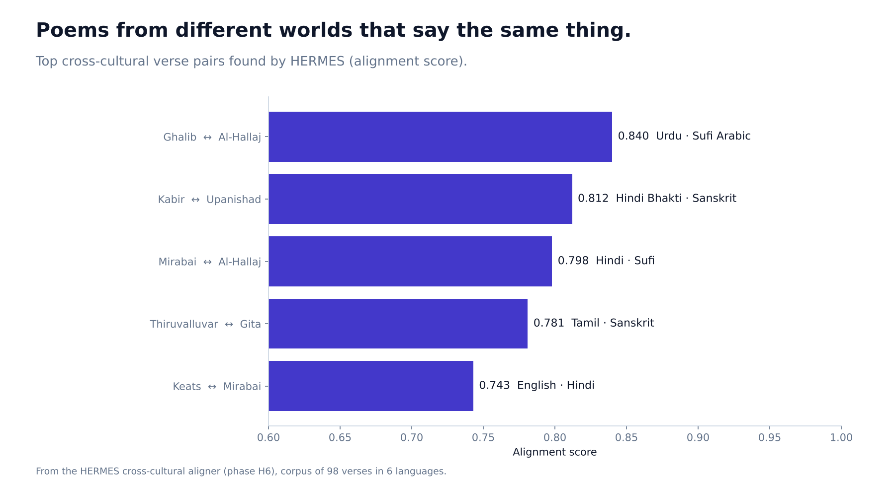
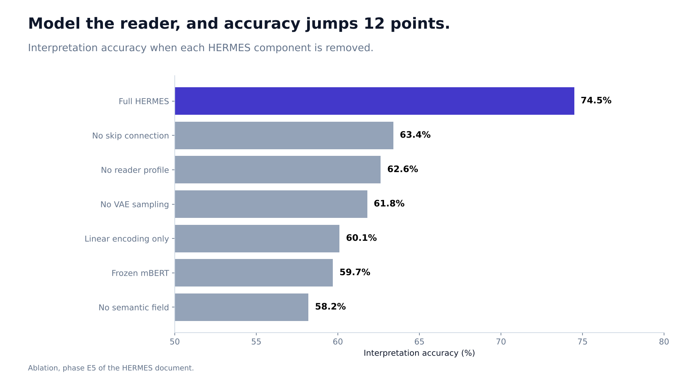
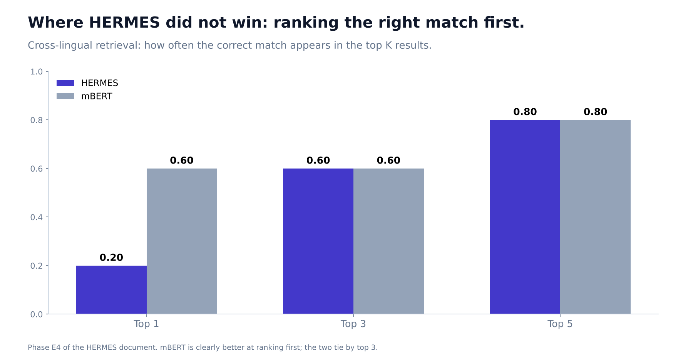

Does a Poem Mean the Same Thing to Everyone? I Built a Model That Says No.
HERMES models the reader, not just the text, and it found something surprising about Tamil poetry.

A poem about longing means one thing to someone who has just lost a person they love and another to a student in a philosophy seminar. Every literature teacher knows this. Almost every language model ignores it: it reads the verse and produces the same meaning for everybody.
In my last project, QuLit, I represented a poem as a set of coexisting meanings and let a "context" label such as grief pick one. But grief there was just a switch. HERMES replaces the switch with a person.
Who is reading?
HERMES describes a reader with three things:
- Culture: one of 20 traditions, from Urdu classical to Tamil Sangam to English Romantic.
- Time: one of 10 historical periods.
- Mood: how strongly 12 emotions (grief, longing, joy, rebellion and others) are active.
All three are combined into one 64-number profile. The system then reads a verse through that profile and produces a 128-number meaning that belongs to that reader. Change the reader, and the meaning moves.
It also scores how ambiguous a verse is for that reader. The same line can be wide open to a literal reader and fairly direct to a Sufi scholar.
What worked
- Telling readers apart. The profile encoder identified the reader's context 99.49% of the time, and different readers landed in clean, separate clusters (silhouette score 0.74).
- The reader really matters. Removing the reader profile cut accuracy on my interpretation task from 74.5% to 62.6%. In an ablation of seven versions, every component I removed hurt.
- Finding poems that say the same thing. Across all 98 verses in 6 languages, HERMES found thematic twins that match what readers already feel: Ghalib and the Sufi mystic Al-Hallaj, both writing about loving something until it destroys you; Kabir and the Upanishads on the self you seek being the self that seeks. Its similarity score correlated at 0.79 with my reference measure, a little above plain mBERT at 0.75.

The discovery I did not expect
In the network of cross-cultural matches, the most connected poets were Tamil: Kaniyan Pungundranar ("every place is my hometown, every person is my kin") and Thiruvalluvar. They align with Sanskrit, Arabic, English and Urdu verses at the same time. It suggests the Tamil Sangam tradition has a breadth that computational literary studies has underrated. This is a pattern in a corpus of 98 verses that I built and chose, so I treat it as a question worth asking, not a conclusion.
What did not work
I would rather you hear these from me.
- The writing part collapsed. I asked a small language model to write a reader-specific interpretation. In one test run, 7 out of 10 different verses produced the same sentence about a poet commanding himself. The meaning vectors were fine; the writer was too small to turn them into varied words.
- The ambiguity score does not match human judgment yet. Correlation with human ratings of ambiguity was 0.14, with p = 0.15: not significant.
- At ranking, mBERT wins. Finding the right cross-cultural match as the first result: HERMES 0.20, mBERT 0.60. By the top 3 and top 5 they tie (0.60 and 0.80).
- One test points the wrong way. A direction check on whether meaning shifts the right way when the reader changes gave 36.2%, barely above chance at 33.3%, and removing the reader profile raised it to 41.3%. I suspect how I built the training targets, and I have not fixed it.
- No human evaluation yet. The survey is ready, with 14 verse pairs, but I only have one annotator so far, so I cannot compute agreement.

Why I publish the failures
HERMES is a prototype on 98 verses. It proves the reader can be a first-class part of a meaning model, and it shows which parts need more data and more people. If you work on language models and literature, the most useful thing here may be the list of what broke.
Code: github.com/Davuri124/HERMES